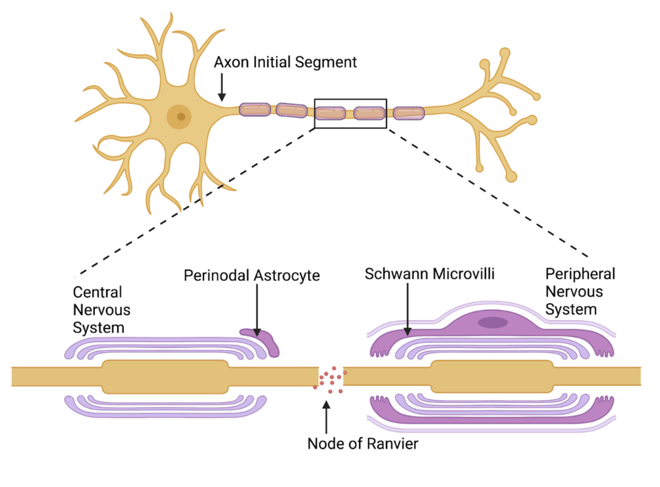
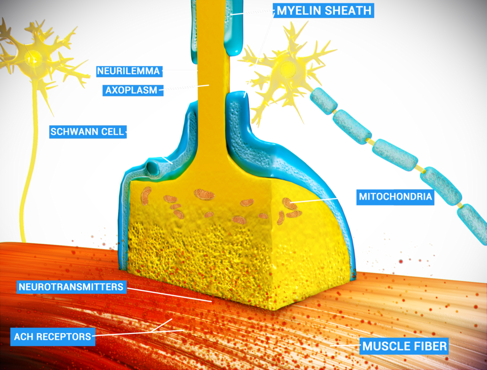

Возбудимые ткани: потенциал действия и синаптическая передача
1. Мембрана как конденсатор с ионными проводимостями
Плазматическая мембрана образована фосфолипидным бислоем толщиной около 5 нм с крайне низким электрическим сопротивлением. Внутренняя и внеклеточная среды — проводящие водные растворы электролитов. Эта структура образует электрический конденсатор, где бислой служит диэлектриком.[1, с. ?]
Удельная емкость мембраны (Cm) составляет около 1 мкФ/см². Из-за малой толщины бислоя разделение зарядов создает напряженность поля порядка 100 000 В/см.
Встроенные белки образуют ионные каналы — параллельные проводники с проводимостью g = 1 / R. Проводимости селективны для калия (gK), натрия (gNa), хлора (gCl) и других ионов.
В эквивалентной RC-схеме мембраны суммарный ток делится на емкостный Ic = Cm · (dV / dt) (перезарядка бислоя) и ионный Iion = g · (Vm - Eeq) (движение ионов через каналы, где Vm — мембранный потенциал, Eeq — равновесный потенциал).
Емкость определяет временную постоянную мембраны (τ = Rm · Cm), сглаживающую скачки напряжения при деполяризации или гиперполяризации.
2. Потенциал покоя, равновесный потенциал, уравнение Нернста и уравнение Гольдмана-Ходжкина-Каца, вклад натрий-калиевого насоса
Потенциал покоя — постоянная разность потенциалов между сторонами мембраны (от -60 мВ в соме нейронов до -90 мВ в мышечных волокнах и аксоне кальмара; внутри отрицательно).[2, с. ?] Он обусловлен ионной асимметрией (внутри преобладают K+ и органические анионы, снаружи — Na+ и Cl-) и избирательной проницаемостью.
| Ион | Внутриклеточная концентрация (ммоль/л) | Внеклеточная концентрация (ммоль/л) | Равновесный потенциал при 37 °C (мВ) |
|---|---|---|---|
| 140 | 4 | -95 | |
| 14 | 142 | +61 | |
| 10 | 110 | -64 | |
| 0,0001 | 1,2 | +125 |
При выходе ионов по градиенту концентрации возникает электрическое поле, приводящее к электрохимическому равновесию. Равновесный потенциал рассчитывается по уравнению Нернста:
Eeq = (R · T / (z · F)) · ln ([Ион]out / [Ион]in)
При 37 °C для одновалентного катиона:
Eeq = (61,5 / z) · lg ([Ион]out / [Ион]in)
Для калия EK ≈ -95 мВ, для натрия ENa ≈ +61 мВ.
Соотношение проницаемостей покоя PK : PNa : PCl = 1 : 0,04 : 0,45. Для точного расчета Vm применяется уравнение Гольдмана-Ходжкина-Каца:
Vm = (R · T / F) · ln ((PK · [K+]out + PNa · [Na+]out + PCl · [Cl-]in) / (PK · [K+]in + PNa · [Na+]in + PCl · [Cl-]out))
Калиевый ток утечки через K2P-каналы вносит определяющий вклад в потенциал покоя. Натриевый ток утечки смещает потенциал к -70 мВ.
Натрий-калиевый насос (Na+/K+-АТФаза) расщепляет 1 АТФ для переноса 3 Na+ наружу в обмен на 2 K+ внутрь. Насос электрогенен (выводит 1 избыточный положительный заряд за цикл), его прямой вклад в потенциал покоя составляет от -4 до -10 мВ, а главный косвенный — поддержание ионных градиентов.
3. Ионные каналы, активационные и инактивационные ворота
Потенциал-зависимые ионные каналы обладают селективностью и воротным механизмом.[3, с. ?]
Селективность задается размером поры и атомами кислорода карбонильных групп фильтра. Воротный механизм управляется сенсором напряжения — сегментом S4 с остатками аргинина и лизина: при деполяризации S4 выталкивается наружу, открывая поровую спираль.
Потенциал-зависимый натриевый канал (NaV) включает два типа ворот:
- Активационные ворота (m-ворота): на внутреннем входе, закрыты в покое.
- Инактивационные ворота (h-ворота): внутриклеточная IFM-петля, открыты в покое.
Состояния NaV-канала:
- Закрытое состояние покоя
- m-ворота закрыты, h-ворота открыты, проводимость нулевая.
- Открытое (активированное) состояние
- При деполяризации m-ворота открываются, Na+ входит в клетку.
- Инактивированное состояние
- Через доли миллисекунды h-ворота закрывают пору изнутри. Канал не проводит ток и не открывается повторно до реполяризации.
Калиевые каналы (KV) содержат только медленные активационные n-ворота.
4. Потенциал действия: фазы, ионные токи, опыты Ходжкина и Хаксли
Потенциал действия — быстрый распространяющийся сдвиг мембранного потенциала. Механизмы изучены А. Ходжкиным и Э. Хаксли на аксоне кальмара (диаметром до 1 мм).[4, с. ?]

Метод фиксации потенциала (voltage clamp) отделил емкостный ток от ионного. Фармакологические блокираторы — тетродотоксин (блокирует Na+-каналы) и тетраэтиламмоний (TEA, блокирует K+-каналы) — позволили разделить токи.
Фаза деполяризации
Деполяризация до порогового уровня (-55 мВ) открывает m-ворота Na+-каналов. Вход Na+ усиливает деполяризацию (петля Ходжкина), gNa >> gK, потенциал стремится к ENa = +61 мВ.
Овершут (инверсия потенциала)
Мембранный потенциал становится положительным (пик +30...+40 мВ), не доходя до ENa из-за инактивации Na+-каналов и роста gK.
Фаза реполяризации
Спад потенциала происходит за счет инактивации Na+-каналов (закрытие h-ворот) и выхода K+ при максимуме gK (открытие n-ворот KV-каналов).
Следовая гиперполяризация (следовой отрицательный потенциал)
Медленное закрытие n-ворот KV-каналов удерживает gK повышенной, смещая потенциал до -90 мВ (ближе к EK), после чего он возвращается к -70 мВ.
5. Абсолютная и относительная рефрактерность и зачем она нужна
Рефрактерность — временное снижение или утрата возбудимости клетки после генерирования потенциала действия.[5, с. ?]
- Абсолютная рефрактерная фаза (1–2 мс): длится от деполяризации до конца реполяризации. Генерация нового ПД невозможна, так как Na+-каналы открыты или инактивированы.
- Относительная рефрактерная фаза (2–4 мс): совпадает со следовой гиперполяризацией. ПД вызывется только сверхпороговым стимулом.
Относительная рефрактерность обусловлена неполным выходом Na+-каналов из инактивации и шунтирующим выходящим K+-током при повышенной gK.
Значение рефрактерности:
- Обеспечивает однонаправленное проведение импульса по аксону.
- Ограничивает максимальную частоту импульсации (до 1000 в секунду при абсолютной рефрактерности в 1 мс).
6. Порог, локальный ответ, аккомодация
Минимальная сила раздражителя, вызывающая деполяризацию мембраны до критического уровня деполяризации (КУД), называется пороговой силой.[6, с. ?] При КУД (например, -55 мВ) входящий натриевый ток превышает суммарный выходящий калиевый ток и ток утечки: |INa| > |IK + Ileak|, и процесс становится самоподдерживающимся.
Закон «всё или ничего»: при подпороговых стимулах потенциал действия не возникает («ничего»), а при достижении КУД генерируется спайк максимальной амплитуды («всё»), не увеличиющийся при дальнейшем усилении раздражителя.
Локальный ответ
При подпороговом стимуле возникает нераспространяющийся локальный ответ (пассивная или частично активная деполяризация):
- Градуальность: амплитуда растет с увеличением силы подпорогового раздражителя.
- Локальный характер: затухает на расстоянии нескольких миллиметров (электротоническое угасание).
- Способность к суммации: временная и пространственная суммация повторных подпороговых ответов может довести деполяризацию до КУД и вызвать потенциал действия.
- Отсутствие рефрактерности: клетка сохраняет способность отвечать на дополнительные стимулы.
Аккомодация мембраны
Аккомодация — приспособление возбудимой ткани к медленно нарастающему раздражителю, приводящее к увеличению пороговой силы тока или невозможности генерации потенциала действия из-за смещения КУД в сторону положительных значений.
Молекулярный механизм: при медленной деполяризации m-ворота Na+-каналов открываются, но инактивационные h-ворота успевают закрыться до достижения порога. Одновременно открываются slow n-ворота K+-каналов, увеличивая выходящий ток K+.
7. Проведение возбуждения, кабельные свойства волокна, константа длины и постоянная времени
Кабельные свойства нервного волокна определяются продольным сопротивлением аксоплазмы, поперечным сопротивлением и емкостью мембраны.[7, с. ?] Чем меньше диаметр волокна, тем выше продольное сопротивление. Поперечное сопротивление зависит от количества открытых каналов покоя, а емкость — от фосфолипидного бислоя.
Проведение возбуждения происходит за счет местных токов между деполяризованным и покоящимся участками: входящий ток смещает потенциал соседнего участка до КУД, открывая потенциалзависимые Na+-каналы.
Электротоническое проведение — пассивное распространение тока без генерации потенциала действия. Пространственная характеристика — константа длины (лямбда): расстояние, на котором подпороговый потенциал уменьшается в e раз (до ~37%). Равна квадратному корню из отношения поперечного сопротивления мембраны к продольному сопротивлению аксоплазмы. Чем больше лямбда, тем выше скорость проведения.
Временная характеристика — постоянная времени (тау), равная произведению поперечного сопротивления мембраны на её емкость. Она показывает время изменения потенциала до 63% от максимума. Чем меньше тау, тем быстрее заряжается мембрана и выше скорость проведения.
8. Миелин, перехваты Ранвье, сальтаторное проведение, от чего зависит скорость
Миелиновая оболочка образована шванновскими клетками в ПНС и олигодендроцитами в ЦНС.[1, с. ?] Она снижает емкость мембраны в десятки раз и увеличивает поперечное сопротивление интернодов в сотни и тысячи раз, повышая константу длины и снижая постоянную времени.

Миелин прерывается перехватами Ранвье (длиной ~1 мкм через каждые 0,2–2,0 мм). В перехватах плотность Na+-каналов составляет 2000–12000 на мкм², а под миелином — не более 25 на мкм².
Возбуждение проводится сальтаторно (скачкообразно): потенциал действия генерируется только в перехватах Ранвье, а по интернодам ток распространяется электротонически. Это обеспечивает высокую скорость и энергетическую экономичность (Na+/K+-насос работает на <1% поверхности аксона).
Факторы скорости проведения:
- Диаметр волокна: в немиелинизированных волокнах скорость пропорциональна квадратному корню из диаметра, в миелинизированных — прямо пропорциональна диаметру (скорость в м/с ≈ диаметр в мкм × 6).
- Наличие миелинизации: обеспечивает скорость до 120 м/с (против ~0,5 м/с в тонких немиелинизированных волокнах).
- Температура: повышение температуры в физиологических пределах ускоряет кинетику каналов и проведение.
9. Классификация нервных волокон по Эрлангеру-Гассеру
Классификация Эрлангера-Гассера делит волокна на группы А (подгруппы альфа, бета, гамма, дельта), B и C по диаметру, миелинизации и скорости проведения.[2, с. ?]
| Тип волокна | Диаметр волокна (мкм) | Скорость проведения (м/с) | Миелинизация | Физиологическая функция |
|---|---|---|---|---|
| A-альфа | 12–20 | 70–120 | Есть (толстая) | Двигательные волокна скелетных мышц, афференты проприорецепторов |
| A-бета | 5–12 | 30–70 | Есть (умеренная) | Афференты прикосновения, давления, проприоцепции |
| A-гамма | 3–6 | 15–30 | Есть (умеренная) | Двигательные волокна интрафузальных мышечных веретен |
| A-дельта | 2–5 | 12–30 | Есть (тонкая) | Быстрая боль, температура, прикосновение |
| B | 1–3 | 3–15 | Есть (тонкая) | Преганглионарные вегетативные волокна |
| C | 0,4–1,2 | 0,5–2,0 | Отсутствует | Медленная боль, температура, постганглионарные симпатические волокна |
10. Нервно-мышечный синапс и строение концевой пластинки
Нервно-мышечный синапс обеспечивает передачу возбуждения с аксона альфа-мотонейрона на скелетное мышечное волокно.[3, с. ?]

Пресинаптическая терминаль содержит митохондрии, везикулы с ацетилхолином (~40 нм) и активные зоны с Ca2+-каналами P/Q-типа. Синаптическая щель (20–50 нм) содержит базальную пластинку с ацетилхолинэстеразой.
Постсинаптическая мембрана (концевая пластинка) образует первичные и вторичные складки. На гребнях складок расположены никотиновые ацетилхолиновые рецепторы (10000–20000 на мкм²), а на дне — потенциалзависимые Na+-каналы (Nav1.4), генерирующие потенциал действия мышечного волокна.
11. Квантовое выделение медиатора, миниатюрные потенциалы, потенциал концевой пластинки и запас надёжности
Выделение нейромедиатора в нервно-мышечном синапсе происходит квантами — порциями ацетилхолина из одной везикулы (около 10000 молекул).[4, с. ?]
В покое спонтанное слияние одиночных везикул вызывает миниатюрный потенциал концевой пластинки (МПКП) амплитудой около 0,5 мВ. МПКП не способны вызвать потенциал действия, так как их величина значительно ниже пороговой деполяризации.
При поступлении потенциала действия в пресинаптическую терминаль открываются потенциалзависимые Ca2+-каналы P/Q-типа. Вход Ca2+ повышает его локальную концентрацию с 0,1 до >100 мкмоль/л. Ca2+ связывается с белковым сенсором синаптотагмином, что через изменение конформации SNARE-комплекса (синаптобревин, синтаксин-1, SNAP-25) приводит к синхронному слиянию 100–200 везикул и высвобождению 1–2 млн молекул ацетилхолина в синаптическую щель.
Одновременное выделение 100–200 квантов медиатора формирует потенциал концевой пластинки (ПКП) — градуальный локальный деполяризационный ответ. В норме его амплитуда составляет 40–50 мВ.
Для возникновения ПД на сарколемме критический уровень деполяризации должен быть превышен на 15–20 мВ (смещение от -90 мВ до порога порядка -70 мВ). Поскольку амплитуда ПКП (40–50 мВ) существенно превышает пороговое значение, синапс обладает запасом надёжности.
Запас надёжности — отношение амплитуды ПКП к величине деполяризации, необходимой для достижения порога ПД. В норме он составляет 2,5–3,0, что гарантирует мышечное сокращение при каждом нервном импульсе даже в условиях утомления.
12. Никотиновый ацетилхолиновый рецептор и ацетилхолинэстераза
Постсинаптическое действие ацетилхолина опосредовано никотиновыми рецепторами (нАХР) — лиганд-зависимыми ионными каналами (ионотропными рецепторами). Рецептор представляет собой белковый пентамер из пяти трансмембранных субъединиц.[5, с. ?]
В зрелой мышце состав рецептора — альфа2-бета-дельта-эпсилон (в эмбриональной вместо эпсилон — гамма). Для открытия канала требуется одновременное связывание двух молекул ацетилхолина с двумя альфа-субъединицами.
При связывании медиатора спирали M2 раздвигаются. Открытый канал проницаем для Na+, K+ и немного Ca2+. При -90 мВ электрохимический градиент для Na+ значительно выше, поэтому входящий натриевый ток преобладает и вызывает деполяризацию (ПКП). При длительном присутствии медиатора рецептор переходит в состояние десенситизации (канал закрыт при связанном медиаторе).
Удаление ацетилхолина из щели обеспечивает ацетилхолинэстераза, прикрепленная к базальной пластинке. Фермент расщепляет до 25000 молекул ацетилхолина в секунду на холин и ацетат.
Холин теряет сродство к рецепторам, каналы нАХР закрываются, и мембрана реполяризуется. Приблизительно 50% холина захватывается обратно в терминаль симпортером CHT1. Внутри терминали холинацетилтрансфераза синтезирует ацетилхолин, который транспортером VAChT упаковывается в везикулы.
Центральный синапс: возбуждающий и тормозный постсинаптические потенциалы, временная и пространственная суммация, аксонный холмик как решающая точка
Центральный синапс состоит из пресинаптической бляшки с везикулами, синаптической щели (20–30 нм) и постсинаптической уплотнённой мембраны с рецепторами.[6, с. ?] Вход Ca2+ при деполяризации терминали запускает экзоцитоз квантов медиатора.
Возбуждающий постсинаптический потенциал (ВПСП)
ВПСП возникает при взаимодействии возбуждающих медиаторов (L-глутамат) с ионотропными рецепторами, открывающими хемоуправляемые каналы для Na+ и K+.
При Vm ≈ -65 мВ движущая сила для Na+ (Vm - ENa = -65 - +60 = -125 мВ) преобладает над силой для K+ (Vm - EK = -65 - -90 = +25 мВ), что обусловливает входящий катионный ток.
Одиночный ВПСП — градационный потенциал амплитудой 0,5–2 мВ, временем нарастания 1–2 мс и спада 10–15 мс, распространяющийся электротонически (с затуханием).
Тормозный постсинаптический потенциал (ТПСП)
Тормозные медиаторы (ГАМК, глицин) увеличивают проницаемость мембраны для Cl- или K+.
Поскольку ECl (-70...-75 мВ) отрицательнее Vm (-65 мВ), вход Cl- при активации ГАМКА-рецепторов вызывает гиперполяризационный ТПСП. Если ECl = Vm, возникает шунтирующее торможение (снижение входного сопротивления мембраны). Активация метаботропных ГАМКВ-рецепторов открывает K+-каналы, вызывая гиперполяризацию длительностью до сотен миллисекунд.
Суммация постсинаптических потенциалов
Для достижения КУД (-55 мВ от -65 мВ) одиночного ВПСП недостаточно, поэтому происходит суммация:
- Пространственная суммация — одновременно в нескольких синапсах; локальные ВПСП алгебраически суммируются, а ТПСП вычитаются из них.
- Временная суммация — при высокочастотной серии импульсов через один вход, когда последующий ВПСП накладывается на фазу спада предыдущего.
Аксонный холмик как решающая точка нейрона
Потенциалы распространяются к аксонному холмику (начальному сегменту аксона), где плотность Nav1.6-каналов в 10–50 раз выше, чем на соме. Порог деполяризации здесь минимален — всего 10–15 мВ (до КУД -55 мВ) против 25–30 мВ на соме. Аксонный холмик служит триггерной зоной («решающей точкой»), считывающей итоговый результат суммации ВПСП и ТПСП и генерирующей ПД при достижении КУД.
Медиаторы и рецепторы: ионотропные и метаботропные
Нейромедиаторы действуют через два класса постсинаптических рецепторов: ионотропные и метаботропные.[7, с. ?]
Ионотропные рецепторы
Представляют собой олигомерные белковые комплексы с ионным каналом в центре; прямое связывание медиатора вызывает открытие поры.
Характеристики: латентный период < 1 мс, открытие за 10–100 мкс, быстрое прекращение эффекта.
Примеры:
- Никотиновый рецептор (н-ХР) — пентамер для Na+ и K+.
- AMPA-рецепторы — тетрамеры для Na+ и K+ (быстрые ВПСП).
- NMDA-рецепторы — высокопроницаемы для Ca2+, в покое блокируются Mg2+.
- ГАМКА- и глициновые рецепторы — хлорные каналы торможения.
Метаботропные рецепторы
Мономерные GPCR (7 трансмембранных доменов), передающие сигнал через гетеротримерные G-белки (α, β, gamma). Замена ГДФ на ГТФ в α-субъединице активирует каскады вторичных посредников:
- Аденилатциклазный путь (Gs/Gi)
- Регулирует образование цАМФ и активность протеинкиназы А (PKA).
- Фосфолипазный путь (Gq)
- Фосфолипаза С расщепляет PIP2 на ИФ3 (высвобождает Ca2+ из ЭПР) и ДАГ (активирует PKC).
- Прямое действие βgamma-субъединиц
- Вызывает открытие K+-каналов GIRK (ГАМКВ, М2-ХР).
К метаботропным относятся м-ХР (М1–М5), mGluR1–mGluR8, ГАМКВ, рецепторы моноаминов и пептидов. Характеризуются медленным ответом (от десятков миллисекунд до секунд), большой продолжительностью (минуты, часы) и каскадным усилением сигнала.
Кратко о синаптической пластичности
Синаптическая пластичность — способность синапса изменять силу передачи сигнала в ответ на изменение уровня функциональной активности.[1, с. ?]
Кратковременная пластичность (от нескольких миллисекунд до нескольких минут):
- Облегчение (фасилитация): второй ВПСП больше первого из-за накопления «остаточного» Ca2+ в пресинаптической терминали.
- Синаптическая депрессия: падение амплитуды ВПСП при длительной высокочастотной стимуляции из-за истощения пула везикул.
Долговременная пластичность (дни, недели, месяцы): долговременная потенциация (ДЛП) и долговременная депрессия (ДЛД).
Механизм ДЛП в гиппокампе: при низкой частоте глутамат активирует только AMPA-рецепторы, а NMDA-рецепторы заблокированы Mg2+. Высокочастотная стимуляция (тетанизация) через AMPA-каналы деполяризует постсинаптическую мембрану и элиминирует Mg2+ из NMDA-рецепторов. Входящий через NMDA-каналы Ca2+ активирует CaMKII, которая фосфорилирует AMPA-рецепторы (увеличивая их проводимость) и стимулирует встраивание новых AMPA-рецепторов из везикул в постсинаптическую плотность. Ретроградные мессенджеры (NO) увеличивают пресинаптический выброс медиатора.
Фармакологическая и патологическая модуляция синаптической и нейромышечной передачи
Воздействие фармагентов, токсинов или аутоиммунных процессов на элементы синапса приводит к нарушениям возбудимости и двигательной функции.[2, с. ?]
| Вещество / Токсин | Мишень действия | Механизм действия | Физиологический эффект |
|---|---|---|---|
| Кураре (d-тубокурарин) | н-ХР постсинаптической мембраны | Конкурентный антагонизм с ацетилхолином | Блокада ВПСП, вялый паралич скелетных мышц |
| Фосфорорганические соединения (ФОС) | Ацетилхолинэстераза (АХЭ) | Необратимое ингибирование фермента | Накопление ацетилхолина, стойкая деполяризация, фасцикуляции с заменой на паралич |
| Местные анестетики (лидокаин) | Потенциал-зависимые Na+-каналы | Блокада поры канала изнутри цитоплазмы | Прекращение генерации и проведения ПД по нервным волокнам |
| Ботулотоксин | Белки SNARE-комплекса | Протеолитическое расщепление SNAP-25 / синаптобревина | Полная блокада экзоцитоза ацетилхолина, вялый паралич |
Курареподобные вещества: d-тубокурарин связывается с α-субъединицами н-холинорецепторов концевой пластинки. Потенциал концевой пластинки (ПКП) снижается ниже порога, предотвращая генерацию ПД и приводя к расслаблению мышц.
Фосфорорганические соединения (ФОС): зарин, хлорофос фосфорилируют активный центр ацетилхолинэстеразы (АХЭ), блокируя гидролиз ацетилхолина до холина и ацетата. Накопление ацетилхолина вызывает фасцикуляции, стойкую деполяризацию концевой пластинки и инактивацию Na+-каналов (деполяризационный блок и паралич).
Местные анестетики (прокаин, лидокаин): проникают через липидный бислой, ионизируются в цитозоле и изнутри заходят в пору потенциал-зависимого Na+-канала, физически перекрывая ток ионов. Сначала блокируются тонкие C-волокна и Aδ-волокна (болевая и температурная чувствительность), затем — толстые Aα-волокна.
Ботулизм: тяжелая цепь ботулотоксина (Clostridium botulinum) обеспечивает эндоцитоз, а легкая (цинк-зависимая эндопептидаза) расщепляет белки SNARE-комплекса (synaptobrevin, SNAP-25 или syntaxin). Без них экзоцитоз ацетилхолина прекращается, вызывая вялый паралич черепных нервов, дыхательной и скелетной мускулатуры.
Миастения (Myasthenia gravis): аутоантитела против н-холинорецепторов разрушают постсинаптические складки и ускоряют эндоцитоз н-ХР (количество снижается на 70–90%). Амплитуда ПКП падает ниже порога открытия Na+-каналов, приводя к патологической мышечной утомляемости.
Методы исследования: электромиография и скорость проведения по нерву
Для оценки состояния мотонейронов, нервов и мышц применяют электромиографию и стимуляционную электронейромиографию.[3, с. ?]
Электромиография
Электромиография (ЭМГ) — метод регистрации потенциалов действия скелетных мышц.
Поверхностная ЭМГ: регистрирует накожными электродами пространственно-временную интерференцию ПД двигательных единиц (ДЕ). В норме при максимальном сокращении амплитуда осцилляций составляет 1–3 мВ.
Игольчатая ЭМГ: регистрирует игольчатым электродом потенциалы действия отдельных двигательных единиц (ПДЕ):
- Длительность ПДЕ: в норме 5–15 мс. При миопатиях укорачивается, при неврогенных поражениях удлиняется из-за спраутинга.
- Амплитуда ПДЕ: в норме 200–600 мкВ; при неврогенной реиннервации — более 3000–5000 мкВ.
- Спонтанная активность: в покое отсутствует; при денервации возникают потенциалы фибрилляций и положительные острые волны.
Измерение скорости проведения импульса по нерву
Для определения скорости проведения импульса (СПИ) по двигательному нерву (n. medianus, мышца m. abductor pollicis brevis) подают стимул в двух точках:
- Дистальная (запястье, точка 1) — регистрация дистальной латентности t1 (включает время проведения по аксону и синаптическую задержку 0,5–1,0 мс).
- Проксимальная (локтевой сгиб, точка 2) — регистрация проксимальной латентности t2.
При расстоянии Δ d (мм) СПИ (V, м/с) рассчитывается по формуле:
V = (Δ d) / (t2 - t1)
Разность латентностей (t2 - t1) исключает время синаптической передачи.
Норма СПИ для Aα-волокон: верхние конечности — 50–60 м/с, нижние — 40–50 м/с.
Патология:
- Демиелинизирующие невропатии (синдром Гийена-Барре): СПИ падает до менее 70% от нормы (до 15–20 м/с), латентности t1 и t2 удлиняются.
- Аксональные невропатии: СПИ сохраняется, но амплитуда М-ответа резко падает.
Источники
- Гайтон А. К., Холл Дж. Э. Медицинская физиология. — М.: Логосфера, 2018. ↑ ↑ ↑
- Физиология человека / под ред. В. М. Покровского, Г. Ф. Коротько. — М.: Медицина, 2011. ↑ ↑ ↑
- Шмидт Р., Тевс Г. Физиология человека: в 3 т. — М.: Мир, 2005. ↑ ↑ ↑
- Barrett K. E., Barman S. M., Brooks H. L., Yuan J. X.-J. Ganong’s Review of Medical Physiology. 26th ed. — McGraw Hill, 2019. ↑ ↑
- Boron W. F., Boulpaep E. L. Medical Physiology. 3rd ed. — Elsevier, 2017. ↑ ↑
- Kandel E. R. et al. Principles of Neural Science. 6th ed. — McGraw Hill, 2021. ↑ ↑
- Hille B. Ion Channels of Excitable Membranes. 3rd ed. — Sinauer, 2001. ↑ ↑